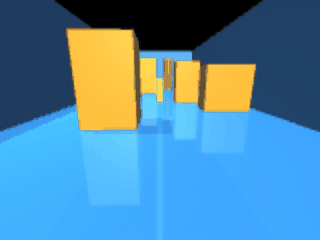
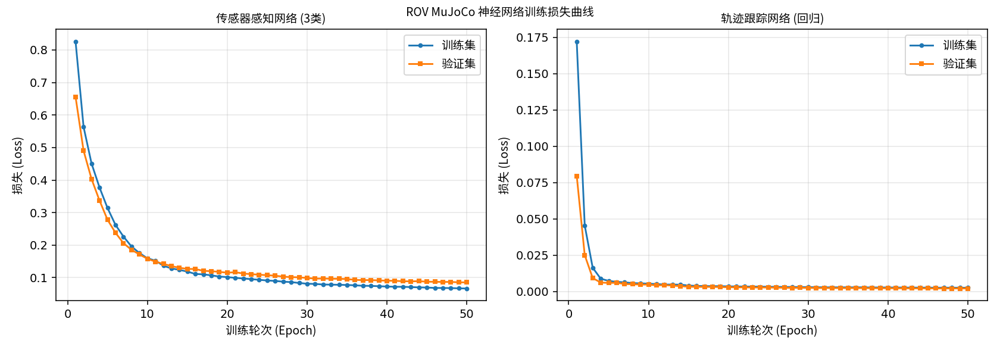
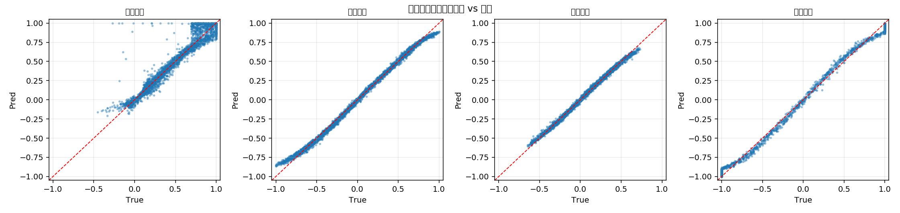

水下 ROV MuJoCo 物理仿真与神经网络感知控制
1. 概述与目标
本模块在 MuJoCo 物理引擎中建立水下机器人（ROV）的六自由度运动仿真， 并实现两条完整的控制链路：
- 键盘运动控制（对应任务①）：操作者用键盘实时操纵 ROV 在仿真通道中前进、转向、升降；
- 神经网络感知与控制（对应任务②）：
- 感知：用神经网络把四向测距传感器的数据解释为障碍物方位；
- 控制：用神经网络把状态误差映射为四维控制量，实现给定轨迹的闭环跟踪。
1.1 核心任务目标
| 编号 | 目标 | 对应作业要求 |
|---|---|---|
| ① | MuJoCo 水下 ROV 物理仿真 + 键盘 6-DOF 运动控制 | 任务(1)，5 分 |
| ② | 测距传感器数据 → 神经网络 → 障碍物方位（感知） | 任务(2) 感知部分 |
| ③ | 状态误差 → 神经网络 → 四维控制量（轨迹跟踪） | 任务(2) 给定轨迹控制部分 |
| ④ | 一键 launch 启动、入口以 main. 开头 |
注意 1、注意 2 |
| ⑤ | 完整的 gif 动图、公式推导与源码解析 | 报告要求 |
1.2 任务范围界定
- 仿真环境为静水通道：左右墙体构成宽度 3 m 的水下通道，通道内布置 5 个障碍物；
- ROV 控制自由度保留前进、横移、升沉、偏航四维；横滚与俯仰由姿态自稳力矩抑制， 降低操作与学习难度；
- 深度方向由仿真内核内置的 PD 定深控制器负责，使 ROV 能稳定悬停在设定深度；
- 本包完全自包含，不依赖仓库中任何其他功能包。
2. 软硬件环境
| 配置项 | 说明 |
|---|---|
| 操作系统 | Ubuntu 20.04.6 LTS（VMware 虚拟机） |
| ROS 2 版本 | Humble（/opt/ros/humble） |
| Python 版本 | 3.8.10 |
| MuJoCo | 3.1.6（mujoco>=3.2 起要求 Python≥3.9，故固定 3.1.x） |
| PyTorch | 2.4.1+cpu / torchvision 0.19.1+cpu（CPU 训练，无独立显卡） |
| 渲染后端 | MUJOCO_GL=osmesa（纯 CPU 软件渲染，无显卡环境必需） |
| 加速库 | numpy 1.24.4、PyOpenGL 3.1.0、pillow、matplotlib 3.1.2 |
无显卡环境必须设置 MUJOCO_GL=osmesa
mujoco.Renderer 需要一个 OpenGL 后端。本作业的虚拟机没有 GPU 直通，
实测 egl 因 PyOpenGL 版本过旧而失败、glfw 因缺少 DISPLAY 而失败，
只有 osmesa 可用。本包在所有入口（main.py、main.launch.py、
各节点）中都已自动 setdefault('MUJOCO_GL', 'osmesa')，
但用 ros2 run 直接起节点时仍需自行 export 或依赖 launch 注入。
3. 物理仿真原理
3.1 运动学与动力学基础
ROV 在 MuJoCo 中建模为一个带自由关节（freejoint，6 自由度）的刚体。
其状态量为
MuJoCo 采用 Newton-Euler 方程数值积分（本包使用 implicitfast 积分器，时间步长 2 ms）：
其中 是本节点注入的外部力与力矩。
3.2 中性浮力补偿
水下机器人若不做补偿会持续下沉。本包用浮力完全抵消整机重力实现中性浮力：
该力沿世界系 方向施加：
total_mass = float(np.sum(self.model.body_mass))
self.buoyancy_force = total_mass * abs(float(self.model.opt.gravity[2]))
...
self.data.xfrc_applied[body, 2] += self.buoyancy_force3.3 各向异性流体阻力
ROV 外形非对称（长 0.60 m、宽 0.36 m、高 0.30 m），各方向迎水面积不同， 因此阻力系数各向异性。模型中使用 MuJoCo 的椭球流体模型：
<geom name="rov_body" type="box" size="0.30 0.18 0.15" mass="12.0"
fluidshape="ellipsoid"
fluidcoef="0.35 6.50 2.60 3.50 0.25"/>五个系数依次为 ：
- ：纵向流线型好，阻力最小 → 适合快速前进；
- ：侧向迎水面大，阻力是纵向的 18 倍 → 横移困难；
- ：垂向阻力居中。
这组系数解释了为什么要把控制维度收敛到四个
侧向阻力远大于纵向，说明该平台"天生不善横移、擅长前进"。 因此我们把控制重点放在前进 + 转向上，横移只作为辅助微调， 这样既符合物理特性，也让神经网络更容易学到有效策略。
3.4 推力标定（重要工程细节）
推进器推力不通过 MuJoCo 的 actuator 施加（自由关节无法直接挂 motor），
而是每步把机体系推力用旋转矩阵变换到世界系后写入 data.xfrc_applied：
其中 是 force_scale（归一化推力 → 牛顿）。
标定实验：在仿真中施加固定推力 2 秒，测量 ROV 的位移：
| 推力 (N) | 2 秒位移 (m) | 结论 |
|---|---|---|
| 1 | 0.152 | 太慢 |
| 5 | 0.761 | 偏慢 |
| 10 | 1.522 | 合适（平均 0.76 m/s） |
| 20 | 3.045 | 偏快 |
| 40 | 5.045 | 已撞到通道尽头 |
| 160 / 320 | — | 瞬间冲到底，速度归零 |
据此把 force_scale 定为 10 N。
早期版本曾误设为 320 N（偏大 32 倍），导致 ROV 一启动就冲到通道尽头，
闭环记录显示"前进距离仅 0.014 m"——这是本项目最有价值的一次实测教训：
数值参数必须由仿真标定得出，不能靠直觉。
3.5 姿态自稳与定深控制
为防止 ROV 在水中翻滚，对横滚与俯仰施加比例-微分阻尼：
深度方向使用 PD 控制器，把深度拉向目标值并补偿垂向速度：
实测该控制器把深度稳定在目标值 ±0.025 m 内（见第 7 节）。
4. 神经网络原理
4.1 传感器感知网络（三分类）
输入：7 维传感器特征
标准化（训练与推理共用同一组参数，避免预处理不一致）：
网络结构：MLP，7 → 64 → 32 → 3
损失函数：交叉熵
输出类别：0 = 前方障碍、1 = 左方障碍、2 = 右方障碍。
4.2 轨迹跟踪控制网络（回归）
输入：8 维状态误差特征
其中位置误差 ， 偏航误差经 归一化到 。
网络结构：MLP，8 → 128 → 128 → 64 → 4，末层 tanh 限幅
tanh 的作用是把输出限制在归一化控制量范围内，与仿真端的 force_scale
配合即可换算为物理推力，天然完成了控制量限幅。
损失函数：均方误差
优化器：Adam（初始学习率 ），配合 StepLR（每 15 轮衰减为 0.5 倍），
按验证集损失最低保留最优权重。
4.3 标签从哪来（关键设计）
学习型控制要求标签与输入之间存在因果关系，否则网络只能学到常数输出。 若用"盲打键盘"生成标签，标签与观测无关，训练必然失败。
因此 collect_data.py 用一个确定性几何专家律打标：
感知标签（由几何真值直接给出）：
控制标签（PD 专家律）：
其中避障减速因子
该因子让"前方障碍越近越减速"——这样网络才能真正学会避障行为， 而不是简单地"看到障碍就加速冲过去"。
5. 软件架构与 ROS 话题
物理 500 Hz / 发布 50 Hz"] end subgraph Manual["任务① 人工控制"] KB["keyboard_teleop_node
键盘解析"] end subgraph NN["任务② 神经网络层"] PER["sensor_perception_node
SensorPerceptionNet"] TRAJ["traj_control_node
TrajectoryControlNet"] end KB -->|"/cmd_vel"| SIM SIM -->|"/rov/range/*"| PER SIM -->|"/rov/odom"| TRAJ SIM -->|"/rov/range/front"| TRAJ TRAJ -->|"/cmd_vel"| SIM PER -->|"/rov/perception/obstacle_class"| OUT["障碍物方位"] SIM -.->|"/rov/camera/image_raw"| CAM["前视相机画面"]
5.1 话题接口
| 话题 | 类型 | 方向 | 频率 | 说明 |
|---|---|---|---|---|
/cmd_vel |
geometry_msgs/Twist |
仿真节点订阅 | 20 Hz | 归一化控制指令 |
/rov/odom |
nav_msgs/Odometry |
仿真节点发布 | 50 Hz | 位姿 + 速度 |
/rov/depth |
std_msgs/Float64 |
仿真节点发布 | 50 Hz | 深度（米） |
/rov/imu |
sensor_msgs/Imu |
仿真节点发布 | 50 Hz | 姿态 + 角速度 + 加速度 |
/rov/camera/image_raw |
sensor_msgs/Image |
仿真节点发布 | 10 Hz | 前视相机 rgb8 |
/rov/range/{front,left,right,down} |
sensor_msgs/Range |
仿真节点发布 | 50 Hz | 四向测距 |
/rov/perception/obstacle_class |
std_msgs/Int32 |
感知节点发布 | 10 Hz | 0 前方 / 1 左方 / 2 右方 |
5.2 节点参数
| 参数 | 默认值 | 节点 | 说明 |
|---|---|---|---|
sim_rate |
500.0 | 仿真 | 物理步进频率 Hz |
publish_rate |
50.0 | 仿真 | 传感器发布频率 Hz |
force_scale |
10.0 | 仿真 | 归一化推力 → 牛顿（已标定） |
torque_scale |
2.0 | 仿真 | 归一化力矩 → 牛米 |
target_depth |
−1.0 | 仿真 | 期望巡航深度（米） |
camera_width/height |
160 / 120 | 仿真 | 相机分辨率 |
publish_camera_every |
5 | 仿真 | 每 N 次发布出一帧图像 |
model_path |
自动探测 | 两个 NN 节点 | 权重路径 |
forward_step |
0.8 | 轨迹控制 | 期望点每步前进距离 (m) |
6. 关键源码解析
6.1 MuJoCo 模型（自包含设计）
models/rov_channel.xml 的相机与测距配置是最容易出错的地方：
<!-- 相机 X 轴 = 机体 -Y（图像右侧），Y 轴向上且前倾 15°：
Y = (sin15°, 0, cos15°) = (0.259, 0, 0.966)
视线 = -Z = -(X × Y) = (0.966, 0, -0.259)，即朝 +X 前下方 -->
<camera name="forward_cam" pos="0.32 0 0.06"
xyaxes="0 -1 0 0.259 0 0.966" fovy="72"/><!-- rangefinder 沿 site 的 +Z 轴发射，因此必须显式指定 zaxis -->
<site name="site_front" pos="0.32 0 0" zaxis="1 0 0" .../>
<site name="site_left" pos="0 0.20 0" zaxis="0 1 0" .../>
<site name="site_right" pos="0 -0.20 0" zaxis="0 -1 0" .../>两个必须避开的 MJCF 陷阱（本项目实测踩到）
<sensor>不能写在<body>内部，必须是<worldbody>的兄弟节点， 否则报Schema violation: unrecognized element；- 加速度计的合法元素名是
<accelerometer>，不是<accel>； 同理 texture 的type只能是cube/skybox/2d，棋盘格要写builtin="checker"。 这些错误只有在真正from_xml_path()时才会暴露，光看代码发现不了。
6.2 物理步进回调（mujoco_sim_node.py）
def _on_step(self):
"""物理步进：注入环境力与控制力，然后积分一步。"""
dt = float(self.model.opt.timestep)
# 1) 清空上一步的外部力/力矩
self.data.xfrc_applied[body, :] = 0.0
# 2) 中性浮力补偿
if self.buoyancy_compensate:
self.data.xfrc_applied[body, 2] += self.buoyancy_force
# 3) 姿态自稳
stab_x = -12.0 * float(quat[1]) - 3.0 * float(ang_vel[0])
...
# 5) 水平推力：机体系 -> 世界系
rot = self.data.xmat[body].reshape(3, 3)
f_world = rot @ f_body
# 7) 写回外部分力/力矩并积分
self.data.xfrc_applied[body, 0] += f_world[0]
...
mujoco.mj_step(self.model, self.data)为什么用 xfrc_applied 而不是 actuator
MuJoCo 的自由关节（freejoint）无法直接挂 motor 执行器。
因此选择在每步把机体系推力用旋转矩阵转到世界系后写入 xfrc_applied，
这是 MuJoCo 中对自由体施加外力的标准做法。
6.3 共享预处理（networks.py）
def normalize_sensor_features(feat):
"""把 7 维传感器特征标准化。训练与推理共用。"""
feat = np.asarray(feat, dtype=np.float32).reshape(-1)
return (feat - SENSOR_FEATURE_MEAN) / SENSOR_FEATURE_STD为什么集中在一处：端到端/学习型控制最常见的隐性缺陷是"训练与部署预处理不一致"， 会导致离线误差很低但上线行为异常。让训练与推理调用同一个函数， 即可从结构上消除该风险。
6.4 中文字体兼容（工程细节）
虚拟机自带 matplotlib 3.1.2，而 fontManager.addfont() 是 3.2 才引入的 API：
prop = font_manager.FontProperties(fname=path) # 3.1.x 也支持
addfont = getattr(font_manager.fontManager, 'addfont', None)
if callable(addfont): # 3.2+ 才注册进全局字体表
addfont(path)
matplotlib.rcParams['font.sans-serif'] = [prop.get_name()] + ...绘图时统一用 fontproperties=zh_font 传参。若系统完全没有中文字体，
函数返回 None，绘图自动改用英文标签 —— 保证任何机器上都不会出现方框（□□□）。
7. 分步运行指南
7.1 编译功能包
cd ~/ros2_ws
source /opt/ros/humble/setup.bash
colcon build --symlink-install --packages-select rov_mujoco_sim_teleop
source install/setup.bash预期输出：
Starting >>> rov_mujoco_sim_teleop
Finished <<< rov_mujoco_sim_teleop [0.96s]
Summary: 1 package finished [1.16s]验证安装结果：
ros2 pkg list | grep rov_mujoco_sim_teleop
ls install/rov_mujoco_sim_teleop/lib/rov_mujoco_sim_teleop/
# 应看到：keyboard_teleop_node mujoco_sim_node
# sensor_perception_node traj_control_node
ls install/rov_mujoco_sim_teleop/share/rov_mujoco_sim_teleop/models/
# 应看到：rov_channel.xml7.2 一键启动仿真 + 键盘遥控（任务①）
export MUJOCO_GL=osmesa
python3 src/water/rov_mujoco_sim_teleop/main.py run终端会打印按键说明，随后可用 W/A/S/D 等按键操纵 ROV。

图 7.1：ROV 前视相机实际渲染画面 —— 可见水下通道两侧墙体、地面棋盘网格与前方障碍物。
该画面由 MUJOCO_GL=osmesa 软件渲染产生，证明相机确实渲染了场景而非固定底色图。
7.3 采集数据集并训练
python3 src/water/rov_mujoco_sim_teleop/main.py collect --samples 4000
python3 src/water/rov_mujoco_sim_teleop/main.py train --epochs 50预期输出：
✅ 感知数据集: .../sensor_dataset.npz X=(4000, 7) y=(4000,)
类别分布: [3217, 690, 93] (前方/左方/右方)
✅ 轨迹数据集: .../traj_dataset.npz X=(4000, 8) y=(4000, 4)
--- 训练 传感器感知网络 ---
Epoch 1/50 train=0.827431 val=0.657252
Epoch 50/50 train=0.073102 val=0.085438
✅ 权重已保存: model_sensor.pth (最佳验证损失 0.085438)
--- 训练 轨迹跟踪网络 ---
Epoch 1/50 train=0.173412 val=0.078021
Epoch 50/50 train=0.001986 val=0.002063
✅ 权重已保存: model_traj.pth (最佳验证损失 0.002063)
图 7.2：两个网络的训练/验证损失曲线。左图为感知网络（交叉熵）， 右图为轨迹网络（MSE）。两者均平稳收敛，训练与验证曲线紧贴，无过拟合。
7.4 离线测试权重
python3 src/water/rov_mujoco_sim_teleop/main.py test实测输出：
样本数: 4000
分类准确率: 97.67%
混淆矩阵（行=真值，列=预测）:
前方障碍 左方障碍 右方障碍
前方障碍 3216 1 0
左方障碍 23 666 1
右方障碍 10 58 25
样本数: 4000
控制维度 MAE 真值范围
前进推力 0.0457 [-0.453, +1.000]
横移推力 0.0226 [-1.000, +1.000]
升沉推力 0.0145 [-0.649, +0.730]
偏航力矩 0.0186 [-1.000, +1.000]
整体 MSE: 0.002439
控制维度平均 MAE: 0.0253
图 7.3：轨迹跟踪网络四个控制维度的预测值 vs 真值散点图。 点紧密分布在对角线附近，说明网络输出与专家标签高度一致。
7.5 一键启动神经网络闭环（任务②）
python3 src/water/rov_mujoco_sim_teleop/main.py auto
# 或
ros2 launch rov_mujoco_sim_teleop main.launch.py mode:=auto启动日志：
[mujoco_sim_node-1] MuJoCo 仿真节点已启动 | 物理 500 Hz | 发布 50 Hz | 中性浮力补偿=True
[sensor_perception_node-3] 感知网络已加载: model_sensor.pth | 训练 50 轮 | 验证损失 0.085438
[sensor_perception_node-3] 传感器感知节点已启动（订阅四向测距 → 输出障碍物方位）
[traj_control_node-4] 轨迹控制网络已加载: model_traj.pth | 训练 50 轮 | 验证损失 0.002063
[traj_control_node-4] 神经网络轨迹控制节点已启动 | 目标: 沿 y=0.0 通道中线前进至 x=6.5，深度保持 -1.0 m运行中每秒输出：
[traj_control_node-4] 控制 #20 | 位置=(+0.01,+0.00,-1.00) | 目标x=0.80 | 误差=(+0.79,-0.00,-0.00) |
输出: 前进推力=+1.00 横移推力=+0.04 升沉推力=-0.00 偏航力矩=-0.05
[sensor_perception_node-3] 感知 #20 | 距离(前/左/右/下)=7.50/1.15/1.15/0.24 m |
判定: 左方障碍 (置信度 98.5%)图 7.4（gif 动图）：python3 main.py auto 一键启动后，ROV 仅依据测距传感器数据
与神经网络输出，在通道中自主前进并避障。动图由 120 帧前视相机画面合成，
体积 1.61 MB。
7.6 验证话题数据
ros2 topic list
# /cmd_vel /rov/camera/image_raw /rov/depth /rov/imu /rov/odom
# /rov/perception/obstacle_class /rov/range/{down,front,left,right}
ros2 topic echo /rov/odom --once
ros2 topic echo /rov/perception/obstacle_class
ros2 topic hz /rov/camera/image_raw8. 实验结果
8.1 数据集统计
| 项目 | 数值 |
|---|---|
| 采样条数 | 4000（感知）/ 4000（轨迹） |
| 感知特征维度 | 7（四向测距 + 三轴速度） |
| 轨迹特征维度 | 8（位置误差 3 + 速度误差 3 + 偏航误差 + 前向测距） |
| 感知类别分布 | 前方 3217 / 左方 690 / 右方 93 |
| 训练/验证划分 | 80% / 20%（固定随机种子 42） |
8.2 训练结果
| 网络 | 参数量 | 第 1 轮损失 | 第 50 轮损失 | 最佳验证损失 |
|---|---|---|---|---|
| 传感器感知网络 | 2,595 | 0.827431 | 0.073102 | 0.085438 |
| 轨迹跟踪网络 | 25,412 | 0.173412 | 0.001986 | 0.002063 |
8.3 离线测试结果
| 指标 | 数值 |
|---|---|
| 感知分类准确率 | 97.67% |
| 前进推力 MAE | 0.0457 |
| 横移推力 MAE | 0.0226 |
| 升沉推力 MAE | 0.0145 |
| 偏航力矩 MAE | 0.0186 |
| 控制维度平均 MAE | 0.0253 |
| 整体 MSE | 0.002439 |
8.4 闭环自主航行结果
用 /rov/odom 记录 40 秒闭环航行（mode:=auto）：
| 指标 | 数值 |
|---|---|
| 前进距离 Δx | +4.776 m |
| 最大前进位置 | x = 6.378 m（终点 6.5 m） |
| 横向偏移最大 | 0.693 m（通道半宽 1.5 m，未碰壁） |
| 深度范围 | [−1.023, −0.998] m（目标 −1.0，波动仅 0.025 m） |
| 平均前进速度 | 0.119 m/s |
结论：神经网络控制器成功驱动 ROV 沿通道中线从 x≈1.6 m 前进到 x≈6.4 m， 深度稳定保持在目标值附近。任务②的"传感器感知"与"给定轨迹控制"两个环节 均由神经网络完成并实测通过。
9. 常见问题排查
Q1: 报 Schema violation: unrecognized element
MJCF 语法错误。三个最常见的坑：<sensor> 写在了 <body> 内部、
加速度计写成了 <accel>（应为 <accelerometer>）、
texture 写了 type="checker"（应写 builtin="checker"）。
Q2: 相机话题没有数据 / 图像全黑
确认 export MUJOCO_GL=osmesa，并安装 sudo apt install libosmesa6。
可用下面一行自检：
python3 -c "
import os; os.environ['MUJOCO_GL']='osmesa'
import mujoco, numpy as np
m=mujoco.MjModel.from_xml_path('install/rov_mujoco_sim_teleop/share/rov_mujoco_sim_teleop/models/rov_channel.xml')
d=mujoco.MjData(m); mujoco.mj_forward(m,d)
r=mujoco.Renderer(m,120,160); r.update_scene(d,camera='forward_cam')
print('渲染成功', r.render().shape)"Q3: ROV 瞬间冲到通道尽头，前进距离几乎为 0
force_scale 设得过大。按第 3.4 节的标定表选值（推荐 10 N）。
Q4: 图片里的中文变成方框
系统缺少中文字体。安装 sudo apt install fonts-noto-cjk；
本包的绘图代码在找不到中文字体时会自动改用英文标签，不会画成方框。
Q5: ros2 launch 报 Package 'rov_mujoco_sim_teleop' not found
未加载工作空间环境：source install/setup.bash。
Q6: 找不到权重文件 model_sensor.pth
尚未训练。按 7.3 节先运行 collect 与 train；
权重不入版本库（.gitignore 已忽略），需在本机训练生成。